Córtex Estudos · 4º Semestre · Anato Pato II · Aula 05 (dupla — 19 e 24/08)
Patologias Intestinais
Da histologia normal ao adenocarcinoma invasivo, passando por colite ulcerativa × Crohn, pólipos, displasia e polipose adenomatosa familiar. É a aula que a Profa. Janaina encerrou anunciando as duas lâminas da prova prática: pólipo hiperplásico com inflamação e adenocarcinoma invasivo — "dois extremos, conceitos bem escrachados". Este hub cobre a teoria inteira que sustenta esse laudo.
1 · Histologia normal: o mapa que a patologia consulta
Antes de qualquer doença, a professora refez o trajeto histológico do intestino — porque todo laudo de patologia intestinal começa perguntando "isso aqui deveria ser o quê?". As quatro camadas são sempre as mesmas (mucosa → submucosa → muscular do órgão → serosa), e a muscular da mucosa é a linha divisória que vai separar colite de Crohn mais adiante.
Duodeno — o segmento que neutraliza ácido
- Recebe o quimo ácido do estômago e as enzimas pancreáticas, que só funcionam em pH adequado. Quem resolve são as glândulas de Brunner, na submucosa: secretam muco alcalino que sobe e é drenado abrindo-se nas criptas de Lieberkühn — equalizando o pH para as enzimas do pâncreas agirem.
- Vilosidades em forma de folha, mais largas e baixas que as do jejuno.
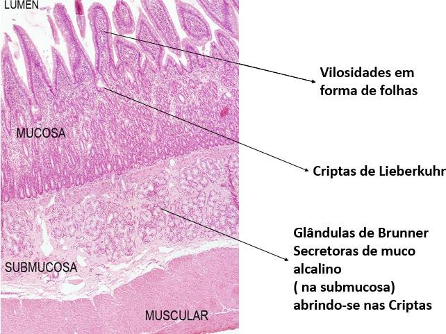
Jejuno e íleo
- Jejuno: vilosidades longas e digitiformes — o auge da absorção. Epitélio simples colunar com enterócitos (absorção) e células caliciformes (muco).
- Íleo: a marca registrada são as placas de Peyer — grandes agregados linfoides na mucosa/submucosa, vigiando o conteúdo antes da válvula ileocecal.
- A quantidade de caliciformes aumenta ao longo do trajeto, proporcional à abrasão: quanto mais sólido e agressivo o conteúdo, mais muco é preciso.
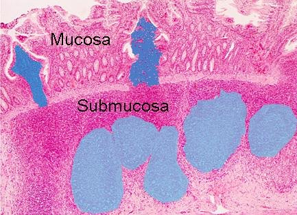
Intestino grosso
- Sem vilosidades — só glândulas de Lieberkühn retas e profundas, riquíssimas em caliciformes (as fezes já estão sólidas; o muco é o lubrificante).
- O tecido linfoide aqui é o GALT — folículos linfoides difusos na mucosa/submucosa. Na dúvida entre delgado e grosso na lâmina, o patologista procura: Peyer = íleo · GALT = grosso · Brunner = duodeno.
- O epitélio do trato digestivo se renova a cada 3–5 dias — uma das maiores taxas proliferativas do corpo. Essa vocação regenerativa é bênção (cura rápido) e maldição (prolifera demais quando estimulado cronicamente).
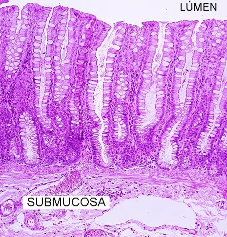
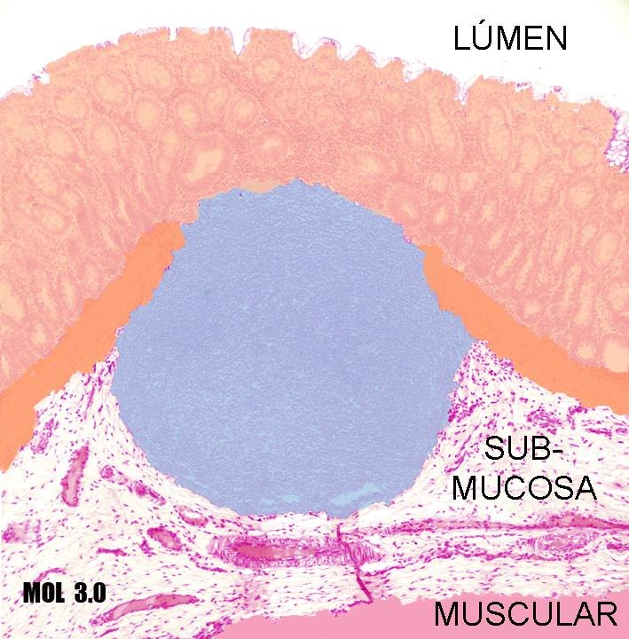
🎯 Microbiota: 200 g de bactérias por quilo de fezes
A professora insistiu: o intestino não trabalha sozinho. A microbiota participa da digestão, da educação imune e da proteção de nicho — e cada quilo de fezes carrega cerca de 200 g de bactérias. Dieta industrializada, antibióticos e estresse produzem DISBIOSE (microbiota desequilibrada), que é um dos três pilares da doença inflamatória intestinal logo abaixo. Nos casos graves chega-se a "zerar e reflorestar": antibioticoterapia intensa seguida de lactobacilos ou transplante de fezes — bactérias purificadas de um doador de convívio íntimo, infundidas por sonda até o duodeno.
2 · Doença inflamatória intestinal: os 3 pilares da etiopatogênese
Doença inflamatória intestinal (DII) é o guarda-chuva que cobre colite ulcerativa e doença de Crohn: inflamações crônicas, idiopáticas e recidivantes do trato digestivo. Não há causa única — há um tripé:
Os 3 pilares da DII (os três precisam conversar)
- 1Predisposição genética — o gene mais citado é o NOD2, no cromossomo 16, associado ao Crohn: altera o reconhecimento de padrões bacterianos pelo sistema imune inato.
- 2Microbiota alterada (disbiose) — dieta industrializada, conservantes, antibióticos → flora desequilibrada que apresenta antígenos errados na hora errada.
- 3Resposta imune desregulada — a mucosa responde à própria flora com inflamação desproporcional e não desliga mais.
- A inflamação crônica é lesiva por natureza: neutrófilos e macrófagos despejam colagenases, elastases e radicais livres que digerem o tecido do próprio hospedeiro. Resultado: erosão (perda do epitélio, rasa) e úlcera (lesão profunda, que invade o conjuntivo).
- Clínica: diarreia crônica (muitas vezes com sangue e muco), cólica, urgência, tenesmo, emagrecimento, anemia ferropriva pelas perdas contínuas.
| Gravidade da colite | Evacuações/dia | Sangue nas fezes |
|---|---|---|
| Branda | < 4 (geralmente no início do dia), urgência mínima | intermitente |
| Moderada | 4–8, cólicas e urgência | frequente |
| Severa | > 8, movimentos noturnos, urgência ± incontinência | frequente |
| Fulminante | > 10, tenesmo, dor abdominal severa | continuamente |
🎯 "Sangue oculto custa centavos" — e anemia crônica é inaceitável
A professora bateu duro na investigação preguiçosa: paciente com queixa intestinal arrastada merece pesquisa de sangue oculto nas fezes ("custa centavos") e ninguém deveria conviver anos com anemia crônica sem que alguém pergunte para onde o ferro está indo. Qualquer médico pode pedir a colonoscopia — "não precisa ser gastro". Ela contou o caso de uma professora colega, com sintomas antigos, cujo diagnóstico veio tardio: "a clínica é soberana — mas só para quem FAZ clínica: anamnese, pergunta, histórico".
3 · Colite ulcerativa × Doença de Crohn
É O quadro comparativo da aula — a professora avisou que a distinção cai em todas as provas dela. A chave dupla: distribuição (contínua × salteada) e profundidade (mucosa × transmural).
| Colite ulcerativa (CU) | Doença de Crohn | |
|---|---|---|
| Onde | só cólon e reto; começa no reto e sobe | boca ao ânus — predileção por íleo terminal |
| Padrão | contínuo e difuso, sem áreas poupadas | salteado (skip lesions): lesão–mucosa sã–lesão |
| Profundidade | limitada à mucosa (respeita a muscular da mucosa) | transmural — pode atravessar todas as camadas e perfurar |
| Histologia típica | úlceras, pseudopólipos, abscessos de cripta | granulomas epitelioides, fissuras, fibrose |
| Complicações próprias | megacólon tóxico | fístulas, bridas, estenoses |
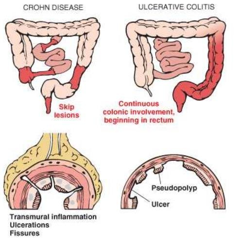
- Pseudopólipo (marca da CU): quando a ulceração destrói a mucosa ao redor, a ilha de mucosa sã que sobrou fica saliente — parece pólipo, mas é o tecido normal cercado de destruição. Por isso "pseudo".
- Na colonoscopia da CU: mucosa contínua e difusamente vermelha, friável, sangrante. No Crohn: áreas doentes intercaladas com trechos normais + úlceras aftoides profundas.
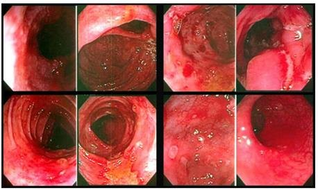
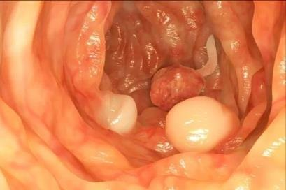
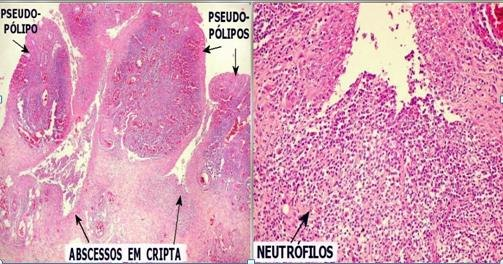
🩺 "Diagnóstico é momento, não erro"
A professora repetiu uma ideia importante para levar para a vida clínica: a biópsia colhe amostras — e a doença pode se declarar aos poucos. Um laudo de "colite inespecífica" que dois anos depois vira Crohn não foi um erro: foi o que a lâmina permitia afirmar naquele momento. Por isso o colonoscopista biopsia múltiplos pontos, inclusive de mucosa aparentemente sã.
4 · Granuloma, fibrose e as marcas do Crohn na lâmina
Por que o Crohn faz granuloma?
- Sequência da inflamação: aguda → crônica → granulomatosa. Quando nem a aguda nem a crônica resolvem, os macrófagos "desistem" da fagocitose e, sob ação das citocinas, se transformam em células epitelioides, que se organizam em círculo ao redor da agressão — o granuloma.
- O granuloma do Crohn pode aparecer em qualquer camada (mucosa, submucosa, muscular) — coerente com a doença transmural. Granuloma = fechou Crohn, mesmo sem ver as demais camadas. Colite ulcerativa NÃO faz granuloma.
- Células epitelioides podem se fundir em células gigantes multinucleadas tipo Langhans — as mesmas da lâmina de tuberculose. Daí a importância da anamnese: histórico de TB muda a leitura de um granuloma intestinal.
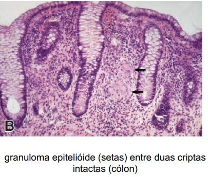
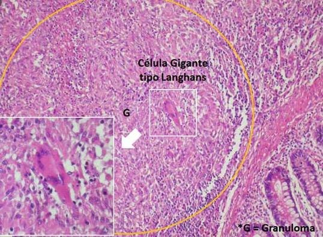
Fibrose: a cicatriz que não absorve
- Mucosa com vida média de 3–5 dias regenera muito — mas sob inflamação persistente a capacidade regenerativa cai, e o corpo troca mucosa por cicatriz (fibrose).
- Mucosa em paralelepípedo: na macroscopia, faixas de mucosa funcional alternadas com faixas de fibrose — os "blocos" do calçamento. Mucosa careca: trechos longos sem epitélio, substituídos por fibrose — área de absorção zero, sem volta. Pacientes com grandes extensões carecas podem precisar de suplementação de nutrientes para o resto da vida.
- Na dúvida entre mucosa e cicatriz, usa-se o tricrômico de Masson — cora colágeno e evidencia as faixas de conjuntivo onde deveria haver mucosa.
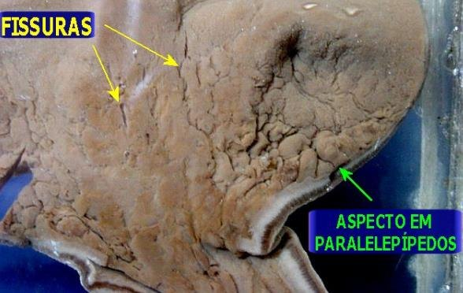
5 · Complicações: fístulas, bridas, volvo e megacólon tóxico
Complicações do Crohn (doença transmural)
- Fístulas: a lesão perfura e a cicatrização une um órgão ao outro. Exemplo marcante da aula: paciente que urinava fezes — fístula entre intestino e bexiga (enterovesical), com infecções urinárias de repetição.
- Bridas: citocinas transmurais ativam fibroblastos fora do intestino → traves fibróticas ligando alças (ou alça a bexiga/útero). Movimento peristáltico arrasta tudo junto: dor absurda + trânsito comprometido → cirurgia exploratória para desfazer.
- Estenose → obstrução → volvo: a fibrose transmural faz uma "cintura" no intestino. Para vencer a passagem estreita, o peristaltismo aumenta (cólicas) e a alça pode torcer (volvo). No raio-X, a alça torcida e distendida dá a "imagem do feijão". Torção → isquemia das ramificações mesentéricas → necrose → ressecção do segmento. As fotos da aula eram do Prof. Tadeu, da emergência cirúrgica: mulher de 36 anos, desconforto intestinal "da vida inteira", abdome agudo, alça gigante torcida.
- Intussuscepção: a onda peristáltica forte demais faz um segmento engolir o segmento da frente. Dois pontos de dobra = dois pontos de possível isquemia. Se desengatar sozinha, resolve — mas é preciso procurar a causa do peristaltismo alterado.
Megacólon tóxico (marca da CU)
- Na CU em crise, grandes segmentos continuamente inflamados despejam um volume enorme de citocinas → efeito tóxico sobre o plexo mioentérico, que controla o peristaltismo e o tônus.
- Plexo intoxicado → o segmento perde o tônus e afrouxa → dilatação bizarra, sem torção, com material fecal impactando. Conduta: remoção do segmento + colostomia temporária.
- Por que na CU e não no Crohn? Porque a CU é contínua — a extensão continuamente inflamada gera o pulso maciço de citocinas. A colite aguda (a bactéria do "lanche de pernil na porta do estádio") não dura o suficiente para isso.
6 · DII e câncer + exames de apoio
⚠️ Risco de câncer: 20–30× maior — e cresce com o tempo descontrolado
Paciente com colite ulcerativa descontrolada tem risco de câncer colorretal 20 a 30 vezes maior que a população geral — vale para a DII como um todo (colite ou Crohn). E o tempo de doença mal controlada soma: aos 10 anos ≈ +1% (chegando a ~31%), aos 15 anos +3,5%, e aos 30 anos de doença não controlada ≈ 60% de chance de câncer de intestino. O mecanismo é o tema dos tópicos seguintes: regeneração forçada + fatores de crescimento inflamatórios = proliferação com erro.
P-ANCA e X-ANCA: quando a inflamação vira o "patógeno"
- Na DII persistente acontece uma loucura imunológica: as próprias células inflamatórias passam a ser vistas pelo organismo como o agente causal da doença — e o sistema imune fabrica anticorpos contra as enzimas do citoplasma dos próprios neutrófilos: são os ANCA (P-ANCA e X-ANCA).
- A doença não nasce autoimune — ela adquire comportamento autoimune no meio do caminho (por isso ANCA é negativo no início). E por isso o tratamento se parece com o de doença autoimune: corticoide.
- Positividade (números do slide): ~75% no Crohn e ~11% na colite. Não fecha diagnóstico — mas justifica a colonoscopia frente ao convênio.
Calprotectina fecal
- Enzima presente nos neutrófilos; se aparece nas fezes, é porque há neutrófilos infiltrando a luz intestinal → inflamação ativa. Não é específica de CU nem de Crohn (positiva até em colite aguda) — é mais um argumento para indicar a colono.
- Por que neutrófilo, se a doença é crônica (linfócitos)? Porque a superfície ulcerada em contato com o bolo fecal reagudiza todo dia: linfócitos predominam nas camadas, neutrófilos abundam na superfície.
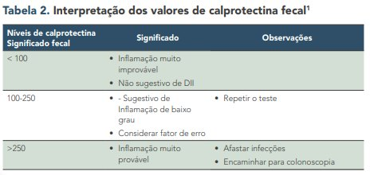
🔗 Congestão + inflamação = risco de trombo
A estase vascular da mucosa inflamada lesiona o endotélio → exposição do subendotélio e do fator de von Willebrand → adesão plaquetária → microtrombos e isquemia focal. É a cascata da hemostasia da Pato I aplicada: inflamação é fator de risco para trombose — mais um motivo para silenciar a DII.
7 · Pólipos I: inflamatório e hiperplásico
🎯 Definição que abre a segunda aula
Pólipo é toda formação tecidual saliente em direção à luz de um órgão cavitário — intestino, estômago, útero, nariz. O nome não diz a natureza: a natureza só a microscopia revela. Com o paciente, aliás, evite "tumoração" — "os caras piram antes da hora"; prefira "massa saliente".
Pólipo inflamatório — o checklist da lâmina
- Infiltrado inflamatório: polimorfonuclear (neutrófilos) se agudo · mononuclear (linfócitos) se crônico. O laudo escreve "infiltrado polimorfonuclear/mononuclear" — traduza.
- Onde está o infiltrado? Limitado à mucosa → pensa colite. Ultrapassou a muscular da mucosa → pensa Crohn. A mesma régua de sempre.
- Congestão vascular (capilares entupidos de hemácias — os "laguinhos vermelhos"), edema (clarões entre as fibras), exsudato (líquido rico em proteínas E células — diferente do transudato, pobre em ambos), eventualmente neoangiogênese e fibrose se crônico.
- Erosão × úlcera: erosão = perda do epitélio, rasa; úlcera = aprofundou no conjuntivo. Só existem se houve morte celular — "a erosão é o achado da morte".
- Abscesso de cripta: leucócitos extravasam para dentro da luz da glândula de Lieberkühn — coleção inflamatória em ambiente cavitário. Clássico de DII em atividade.
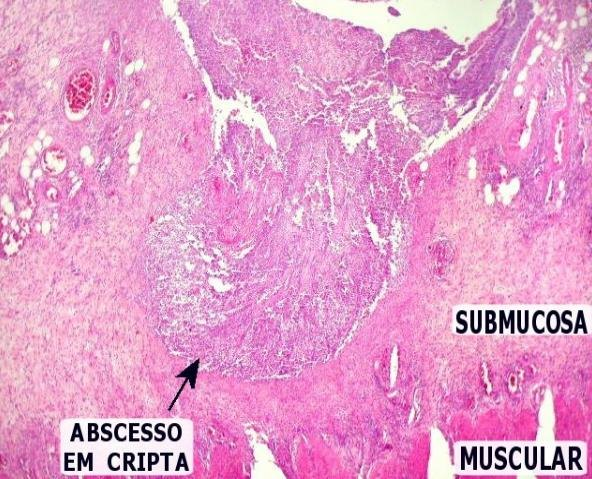
Pólipo hiperplásico — proliferou, mas sem atipia
- O epitélio intestinal é unistratificado. Bastou ver sobreposição (caliciforme sobre caliciforme, enterócito sobre enterócito) → epitélio proliferado.
- Na hiperplasia a única alteração nuclear aceitável é o núcleo alongado por falta de espaço ("é a gente no metrô de manhã"). Sem hipercromasia, sem nucléolo, sem perda de polaridade, sem pleomorfismo.
- A glândula proliferada pode ter lúmen irregular/cribriforme — o empilhamento celular avança sobre a luz.
- Causa habitual: fatores de crescimento liberados pela inflamação crônica. Mas pode ocorrer sem inflamação visível — fatores de crescimento da dieta (hormônios da pecuária, "o pintinho que cresce em 45 dias").
🎯 A regra de ouro do laudo: o status MAIS GRAVE dá o nome
Se o pólipo tem inflamação e hiperplasia, o laudo descreve tudo — mas conclui pelo mais grave: pólipo hiperplásico. É "uma doença levando à outra": a inflamação é a base, a proliferação é a consequência mais preocupante. E o médico que lê só a conclusão perde o principal: tratar a inflamação que está demandando a hiperplasia. "Pólipo hiperplásico, fica tranquilo" NÃO existe — é um órgão em sofrimento avisando a tempo.
Séssil × pediculado · liso × rugoso · hamartomatoso
- Séssil: cresce 100% aderido à mucosa. Se for maligno, tem caminho curto para invadir camadas profundas (submucosa vascularizada) → pior prognóstico.
- Pediculado: forma uma haste de conjuntivo vascularizado; as atipias ficam na ponta → a haste "compra tempo" até a invasão. Séssil não vira pediculado — cada um nasce com sua forma.
- Superfície na colono: lisa → não sugere proliferação · rugosa → sugere sobreposição celular (pólipo proliferativo).
- Pólipo hamartomatoso: arquitetura da mucosa congenitamente bizarra (vilos e glândulas de tamanho/forma alterados), mas histologia celular normal, sem atipia — benigno. Feio no tamanho, inocente na célula.
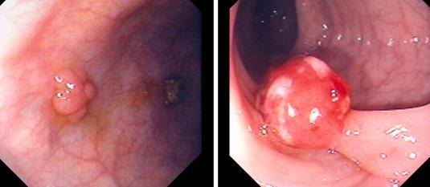
8 · Zonas proliferativas, displasia e adenomas
O mapa das zonas (o "artigo fofo" da aula)
Onde a mitose PODE acontecer no vilo/glândula
- 1Zona 1 — fundo da glândula — o "armazém" das células germinativas indiferenciadas. Aqui NÃO se flagra mitose em atividade.
- 2Zona 2 — laterais da glândula — é AQUI que a mitose é fisiológica: diferenciação e multiplicação para renovar o epitélio a cada 3–5 dias. Uma ou outra figura de mitose = normal.
- 3Zona 3 — ápice do vilo — células maduras, que não se multiplicam mais: aqui o normal é apoptose (picnose, cariólise). Mitose no ápice = estímulo mitogênico fora de controle.
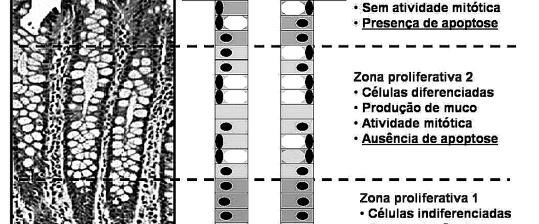
Displasia: o checklist de atipias (a "tabela de cruzes")
| Item do checklist | Hiperplasia | Displasia | Adenocarcinoma |
|---|---|---|---|
| Relação núcleo/citoplasma (no intestino, 1/3) | normal (núcleo só alongado por aperto) | aumentada | bizarra |
| Pleomorfismo (variação de forma) | ausente | presente, discreto a moderado | extremo |
| Hipercromasia | ausente (ou discretíssima) | presente | intensa |
| Nucléolo evidente | não | pode aparecer | múltiplos, evidentes |
| Figuras de mitose fora de lugar | não | ocasionais | francas e frequentes |
| Polaridade (núcleos na base) | mantida | parcialmente perdida | perdida — "ninguém do lado de ninguém" |
- Quanto mais itens marcados e mais intensos, mais o laudo caminha de displasia leve → moderada → severa → adenocarcinoma. Displasia ainda é reversível; por isso vigiar + tratar a causa (dieta, fibras, estilo de vida, inflamação).
- A briga dos patologistas: a professora mostrou lâminas do mesmo artigo laudadas diferente por três laboratórios (baixo grau × alto grau × adenocarcinoma). A linha é tênue — e hoje o desempate é molecular (imuno-histoquímica), não o olho.
- Uma célula maligna carrega em média ~100 genes mutados até a morfologia denunciar. Hiperplasia "de aparência normal" pode já colecionar mutações invisíveis — por isso proliferação exagerada nunca é desprezada.
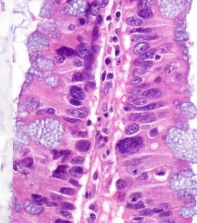
Adenomas: a displasia com nome de pólipo
- Adenoma = pólipo displásico = neoplasia BENIGNA (adenocarcinoma é a maligna). Classifica-se pelo lugar da alteração: tubular (na glândula — o mais comum), viloso (no vilo) e tubuloviloso (nos dois).
- Não neoplásicos: inflamatório, hiperplásico e hamartomatoso. Serrilhado séssil: variante hiperplásica/serrilhada que merece vigilância.
- Se o pólipo pequeno sai inteiro na colonoscopia, ótimo — vigilância anual. Se é grande, sai por partes e a histologia mostrar malignidade invadindo camadas → reopera para garantir margem (a colono não é cirurgia de margem).
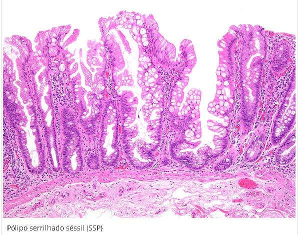
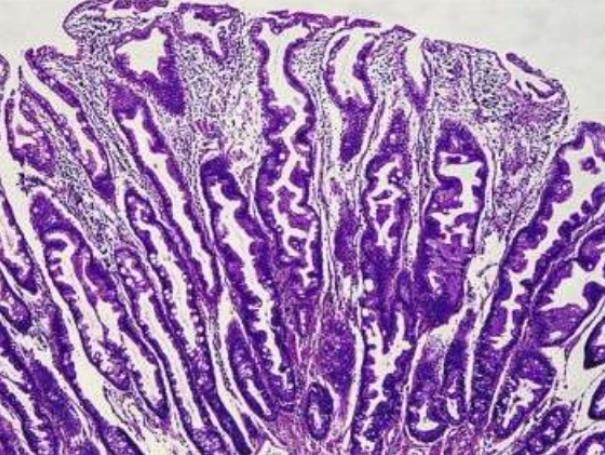
9 · Adenocarcinoma: microambiente, invasão e imuno-histoquímica
A lâmina que "gabarita o checklist"
- Núcleos bizarramente grandes, nucléolos evidentes, hipercromasia, figuras de mitose francas (cromossomos esparramados, citocinese à vista), perda total de polaridade — e nada mais lembra enterócito ou caliciforme.
- Eosinofilia intensa: metabolismo altíssimo. E aqui entra a bioquímica: a proliferação supera a vascularização → hipóxia → ativação do HIF → a célula liga as enzimas da glicólise (fosfofrutoquinase, isomerases) → produção maciça de ácido lático.
- Efeito Warburg / microambiente tumoral: o ácido lático repele as células inflamatórias — na lâmina do câncer há MENOS inflamação que na displasia. Isso favorece o tumor (sem linfócitos T induzindo apoptose) e piora o prognóstico: neoplasia maligna com inflamação crônica ao redor tem vigilância; sem inflamação, "a chance de escapar dali é gigante".
- Desmoplasia: a inflamação crônica que acompanha a neoplasia ativa fibroblastos → deposição de conjuntivo entre as glândulas → o tumor vira "bolota dura" que comprime órgãos.
Invasão e metástase
- Glândula na submucosa do intestino grosso = glândula invasora. A submucosa do grosso não tem glândula nenhuma (Brunner é só duodeno!) — se há glândulas atípicas ali, são Lieberkühn cancerígenas que romperam o limite: adenocarcinoma invasivo.
- A submucosa é extremamente vascularizada: célula que perdeu genes de adesão se solta, ganha a circulação e o primeiro alojamento do câncer de intestino é o FÍGADO (drenagem portal).
- Margem: "células inflamatórias são como formigas — vai que tem": inflamação crônica além da área visível de tumor sugere tumor além da visão → ampliar margem.
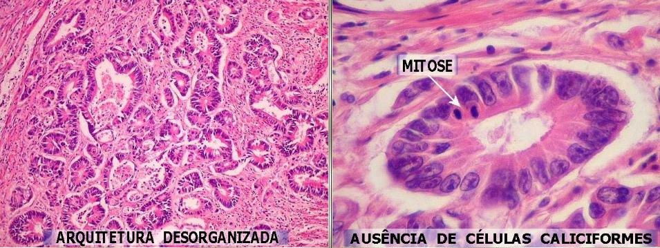
Imuno-histoquímica: Ki-67 e p53
- Quando a lâmina é duvidosa, o desempate é a imuno-histoquímica: anticorpos coloridos que se ligam a proteínas específicas (mesmo bloco de parafina — não precisa rebiopsiar).
- Ki-67 = índice de proliferação. Alto = a favor de malignidade ("70% onde deveria ser 10 — segura").
- p53 = supressor tumoral, induz apoptose. Expressão diminuída = a favor de malignidade. Regra da professora: "mais p53, melhor; menos, pior".
- Ki-67 alto + p53 baixo + morfologia = não tem mais o que esperar: trata como maligno. E o horizonte: biópsia líquida (DNA de células tumorais soltas no sangue — amostra mais representativa que o fragmento de pinça) e leitura primária de lâminas por scanner + IA (~70% dos casos), com o patologista nos 30% difíceis.
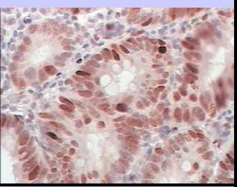
10 · Polipose adenomatosa familiar e a via molecular
- PAF: herança autossômica dominante — mutação do gene APC, no cromossomo 5 (o nome vem de Adenomatous Polyposis Coli). Resultado: atividade multiplicativa exacerbada com 500 a 2.500 pólipos adenomatosos.
- Menos de ~100 pólipos torna PAF improvável — mas o diagnóstico só fecha com o teste genético. E sendo dominante: aconselhamento genético e rastreio dos familiares.
- Malignização em função do tempo de doença: 10 anos → 10% · 20 anos → 50% · 30 anos → 100% de chance de câncer. Por isso a conduta de eleição é a colectomia profilática — remover o cólon antes do câncer, com acompanhamento semestral enquanto se espera. A professora comparou com a Angelina Jolie: retirar o órgão-alvo de quem carrega a mutação é tirar o paciente da condição de risco.
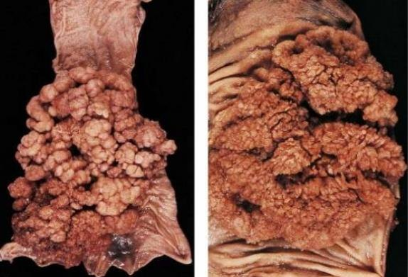
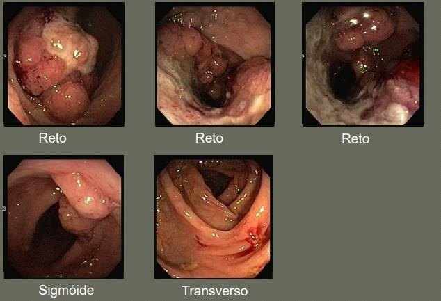
A via molecular do câncer colorretal
Os genes da aula (e onde moram)
- 1APC — cromossomo 5 — degrada a β-catenina (fator de transcrição). APC mutado = ninguém desliga a transcrição → "sai besteira, cópias erradas".
- 2RAS — cromossomo 12 — sinaliza proliferação; mutado, ninguém o desliga.
- 3SMAD — cromossomo 18 — inibidor da proliferação; mutado, o freio some.
- 4p53 — o guardião: induz apoptose da célula errada. "Casou APC mutado com p53 mutado, danou-se" — multiplica e não morre.
11 · A prova prática: como laudar as lâminas 31 e 61
🎯 As regras que a professora ditou
Na prática caem duas condições extremas — sem displasias intermediárias ("a gente não vai virar o Linde"): Lâmina 31 = pólipo intestinal HIPERPLÁSICO (com inflamação) e Lâmina 61 = ADENOCARCINOMA de intestino grosso. São 3 perguntas: (1) o órgão — basta escrever "intestino", sem precisar dizer delgado/grosso; (2) processos patológicos 1 e 2 apontados na projeção (ex.: "hiperplasia de enterócitos", "congestão vascular", "infiltrado inflamatório"); (3) conclusão diagnóstica. A regra sagrada: os processos apontados têm que SUSTENTAR a conclusão — "se você olhou dois processos e concluiu errado, não está certo". Quem aponta displasia tem que laudar displásico; quem só viu hiperplasia + inflamação fecha hiperplásico.
- Também vale para a teórica: diferenciar adenoma tubular × viloso × tubuloviloso CAI; graduar displasia (leve/moderada/severa) NÃO cai — "é uma linha muito tênue, não é justo".
- Roteiros liberados antes da prática: familiarize-se com os termos — "arquitetura desorganizada", "ausência de células caliciformes", "figura de mitose". Se não souber o que é organizado, volte na histologia normal (tópico 1).
✅ Resumo rápido da aula
- Histologia: Brunner = duodeno (muco alcalino via Lieberkühn) · Peyer = íleo · GALT = grosso · caliciformes ∝ abrasão · renovação 3–5 dias · muscular da mucosa = divisor de águas.
- DII: 3 pilares (NOD2/crom.16 + disbiose + imunidade desregulada). CU: contínua, começa no reto, só mucosa, pseudopólipos, abscessos de cripta, megacólon tóxico. Crohn: salteado, transmural, boca-ânus, GRANULOMA (fecha o diagnóstico), paralelepípedo, mucosa careca (Masson), fístulas/bridas/estenose→volvo.
- Exames: ANCA (autoimunidade adquirida — 75% Crohn, 11% colite) e calprotectina fecal (neutrófilos nas fezes; >250 → colono) apoiam, biópsia fecha. Câncer: risco 20–30×; 30 anos descontrolados ≈ 60%.
- Pólipos: saliência na luz; natureza = microscopia. Inflamatório (infiltrado, congestão, edema, erosão/úlcera, abscesso de cripta) · hiperplásico (sobreposição SEM atipia; núcleo alongado só por aperto) · hamartomatoso (arquitetura bizarra, célula normal) · adenoma = displásico = neoplasia benigna (tubular/viloso/tubuloviloso). Laudo = status mais grave. Séssil pior que pediculado.
- Displasia → CA: checklist (núcleo/citoplasma, pleomorfismo, hipercromasia, nucléolo, mitose ectópica, polaridade). Mitose no ápice do vilo = alarme. Adenocarcinoma gabarita tudo + Warburg (HIF → glicólise → lactato repele imunidade) + desmoplasia + invasão (glândula na submucosa do grosso) → metástase no FÍGADO. IHQ: Ki-67 ALTO + p53 BAIXO = maligno.
- PAF: APC, crom. 5, autossômica dominante, 500–2.500 pólipos; câncer 10%/10a → 50%/20a → 100%/30a → colectomia profilática + aconselhamento. Via: APC–β-catenina · RAS (12) · SMAD (18) · p53.
- Prova prática: Lâmina 31 = pólipo hiperplásico · Lâmina 61 = adenocarcinoma de grosso · órgão = "intestino" · processos apontados devem sustentar a conclusão.
🧫 Resumão Pré-Prova — Patologias Intestinais
Revisão da véspera · Anato Pato II · Aula 05 dupla (Profa. Janaina) · só o que foi enfatizado
- Brunner = duodeno (submucosa, muco alcalino, abre nas criptas de Lieberkühn) · Peyer = íleo · GALT = grosso.
- Grosso: sem vilosidades, Lieberkühn + muitas caliciformes. Caliciformes ∝ abrasão do conteúdo.
- Renovação epitelial em 3–5 dias · microbiota ≈ 200 g de bactérias/kg de fezes · disbiose = pilar de DII.
- Muscular da mucosa = régua: inflamação limitada a ela → colite · ultrapassou → Crohn.
| CU | Crohn | |
|---|---|---|
| Local | cólon+reto; começa no reto, sobe | boca→ânus, predileção íleo terminal |
| Padrão | contínuo/difuso | salteado (skip lesions) |
| Profundidade | só mucosa | transmural (pode perfurar) |
| Marca histológica | pseudopólipos, abscessos de cripta | GRANULOMA epitelioide (fecha dx!), Langhans |
| Macro | mucosa vermelha contínua, friável | paralelepípedo, fissuras, mucosa careca |
| Complicação própria | megacólon tóxico | fístulas, bridas, estenose→volvo |
- Etiopatogênese: NOD2 (crom. 16) + disbiose + imunidade desregulada.
- Inflamação granulomatosa = macrófagos → células epitelioides (aguda e crônica falharam).
- Pseudopólipo = ilha de mucosa SÃ saliente entre ulcerações (CU).
- Mucosa careca = fibrose no lugar de mucosa → absorção ZERO, sem volta → confirma no tricrômico de Masson.
- Gravidade da colite: branda <4/dia · moderada 4–8 · severa >8 (noturnos) · fulminante >10.
- Fístula (Crohn transmural): ex. enterovesical → paciente que "urinava fezes".
- Brida: fibrose extra-intestinal ligando alças → dor + obstrução → cirurgia.
- Estenose → volvo: cintura fibrótica → peristaltismo forçado → torção → "imagem do feijão" no RX → isquemia mesentérica → ressecção.
- Intussuscepção: alça engole a da frente; 2 pontos de dobra = 2 riscos de isquemia.
- Megacólon tóxico (CU): citocinas em massa intoxicam o plexo mioentérico → perde TÔNUS → dilatação flácida → ressecção. Só a CU (contínua) gera esse pulso de citocinas.
- ANCA (P/X): anticorpos contra enzimas do citoplasma dos próprios neutrófilos — a doença ADQUIRE comportamento autoimune (negativo no início). 75% Crohn · 11% colite. Não fecha dx; justifica colono.
- Calprotectina fecal: enzima de neutrófilo nas fezes = inflamação ativa. <100 improvável · 100–250 repetir · >250 → colono. Não específica.
- Sangue oculto "custa centavos" · anemia crônica sem investigação = inaceitável · biópsia = padrão-ouro.
- Risco de CA na DII descontrolada: 20–30× · 10 anos ≈31% · 30 anos ≈ 60%.
| Tipo | O que a lâmina mostra | Natureza |
|---|---|---|
| Inflamatório | infiltrado (PMN=agudo/MN=crônico), congestão, edema, exsudato, erosão/úlcera, abscesso de cripta | não neoplásico |
| Hiperplásico | sobreposição celular SEM atipia; núcleo alongado só por aperto; lúmen cribriforme | não neoplásico |
| Hamartomatoso | arquitetura congênita bizarra, célula normal | não neoplásico |
| Adenoma (tubular · viloso · tubuloviloso) | displasia na glândula, no vilo ou em ambos | neoplasia benigna |
| Adenocarcinoma | checklist completo de atipias ± invasão | neoplasia maligna |
- Laudo = status MAIS GRAVE (inflamação + hiperplasia → conclui hiperplásico; descreve tudo).
- Séssil (colado, desce rápido se maligno — pior) × pediculado (haste compra tempo). Rugoso = proliferativo · liso = não.
- Tubular = o mais comum. Pólipo grande que não sai inteiro + malignidade invadindo → reopera por margem.
- Zona 1 (fundo) = germinativas, sem mitose · Zona 2 (laterais) = mitose fisiológica · Zona 3 (ápice) = apoptose. Mitose no ápice = descontrole.
- Checklist de atipia: núcleo/citoplasma (1/3 no intestino) · pleomorfismo · hipercromasia · nucléolo · mitoses ectópicas · polaridade.
- Hiperplasia: só núcleo alongado por aperto. Displasia: marca alguns itens (reversível!). CA: gabarita tudo.
- Célula maligna ≈ 100 genes mutados até a morfologia denunciar.
- Microambiente: hipóxia → HIF → glicólise → lactato → repele imunidade (efeito Warburg) · CA com POUCA inflamação = pior · desmoplasia = fibrose peritumoral (bolota dura).
- Invasão: glândula na submucosa do GROSSO = invasora (grosso não tem Brunner!) · submucosa vascularizada → metástase 1º no FÍGADO.
- IHQ: Ki-67 ALTO + p53 BAIXO = maligno ("mais p53, melhor"). Mesmo bloco de parafina. Biópsia líquida = DNA tumoral no sangue.
- APC · cromossomo 5 · autossômica DOMINANTE · 500–2.500 pólipos (<100 = improvável; dx fecha no teste genético).
- Malignização por tempo: 10a→10% · 20a→50% · 30a→100% → colectomia profilática + vigilância semestral + aconselhamento genético (analogia Angelina Jolie).
- Via molecular: APC degrada β-catenina (fator de transcrição) · RAS (crom. 12) acelera · SMAD (crom. 18) freia · p53 mata a célula errada. APC+p53 mutados = "danou-se".
- Lâmina 31 = pólipo intestinal HIPERPLÁSICO (com inflamação) · Lâmina 61 = ADENOCARCINOMA de intestino grosso.
- 3 perguntas: órgão (basta "intestino") · processos patológicos 1 e 2 apontados · conclusão.
- Coerência: os processos apontados devem SUSTENTAR a conclusão. Apontou displasia → laude displásico. Viu só hiperplasia+inflamação → hiperplásico.
- Teórica: tubular × viloso × tubuloviloso CAI · graus de displasia NÃO caem.
- Pseudopólipo (mucosa SÃ saliente na CU) ≠ pólipo (tecido crescido para a luz).
- Erosão (rasa, só epitélio) ≠ úlcera (profunda, entra no conjuntivo). Ambas exigem morte celular.
- Núcleo alongado por aperto (hiperplasia) ≠ pleomorfismo/hipercromasia (displasia).
- Adenoma = neoplasia BENIGNA (displásico) ≠ adenocarcinoma = maligna.
- Megacólon tóxico (perda de tônus, CU) ≠ volvo (torção por estenose, Crohn).
- Exsudato (rico em proteína e células) ≠ transudato (pobre nos dois).
- Peyer = íleo ≠ GALT = grosso ≠ Brunner = duodeno (e glândula na submucosa do grosso = INVASÃO).
- ANCA: mais positivo no Crohn (75%) que na colite (11%) — números do slide.
Banco de Questões — Patologias Intestinais
Anato Pato II · Aula 05 · estilo ENADE/residência.